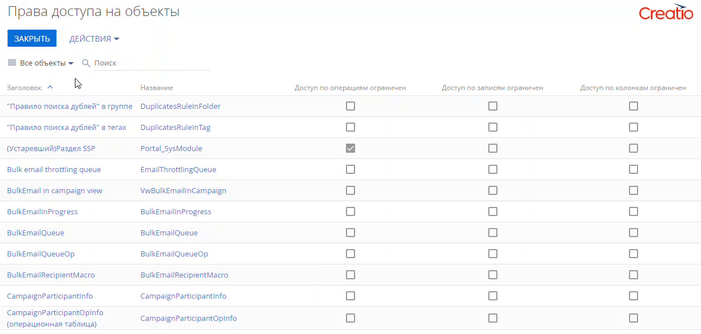
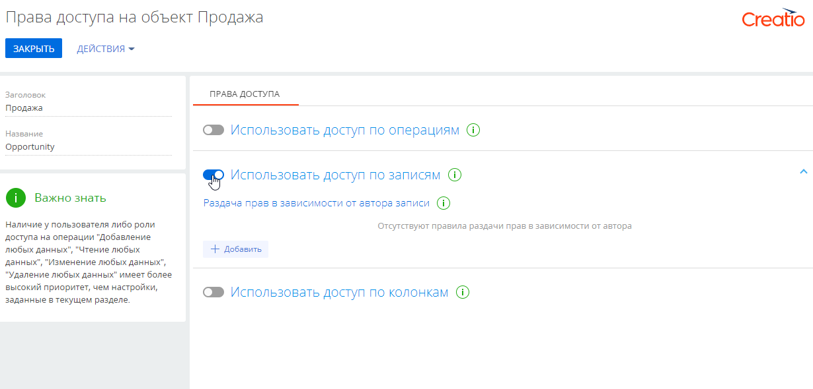
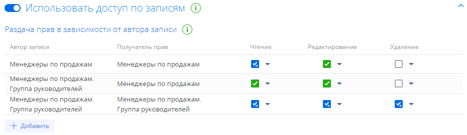
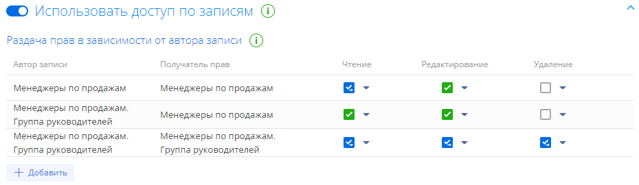
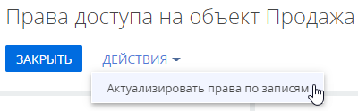

Права доступа на объекты можно ограничить на следующих уровнях:
- По операциям. Подробнее: Настроить доступ по операциям.
- По колонкам. Подробнее: Настроить права доступа на колонки.
- По записям. Настройка прав доступа на уровне чтения, редактирования и удаления отдельных записей выбранного объекта будет рассмотрена в данной статье.
Администратор системы может управлять правами на чтение, обновление или удаление отдельных записей, а также возможностями делегирования этих прав.
Распределение прав доступа по записям включается переключателем “Использовать доступ по записи” в разделе Права доступа на объекты дизайнера системы и зависит от авторства записи. Если автор записи входит в роль, которая указана в столбце “Автор записи”, то система раздает права роли-получателю, указанной в столбце “Получатель прав”. Если роль-получатель является подчиненной, то роль ее руководителей наследует все полученные права доступа.
По умолчанию максимальные права на управление записью имеют:
-
Системные администраторы, которым дан доступ на системные операции “Добавление любых данных”, “Чтение любых данных”, “Изменение любых данных”, “Удаление любых данных”. Эти настройки имеют более высокий приоритет, чем настройки, заданные в разделе Права доступа на объекты.
-
Автор записи и роль руководителей автора с возможностью делегирования прав другим пользователям.
-
Ответственный за запись и роль руководителей ответственного с возможностью делегирования прав другим пользователям.
Подробнее: Настроить права доступа на запись.
Если вы только начинаете знакомство с Creatio, то рекомендуем ознакомиться с концепцией прав доступа на объекты Creatio в онлайн-курсе Управление пользователями и ролями. Права доступа.
В нашем примере авторами записей и получателями прав будут сотрудники, входящие в роли “Менеджеры по продажам” и “Менеджеры по продажам. Группа руководителей”.
-
Перейдите в дизайнер системы, например, по кнопке
 , и откройте раздел настройки доступа к объектам по ссылке “Права доступа на объекты”.
, и откройте раздел настройки доступа к объектам по ссылке “Права доступа на объекты”. -
Например, чтобы настроить права доступа к разделу Продажи, установите фильтр “Разделы” и выберите объект “Продажа”. Кликните по его заголовку или названию — откроется страница настройки прав доступа к объекту раздела Продажи (Рис. 1).
Подробнее: Права доступа на объекты.
Рис. 1 — Выбор объекта раздела и переход на страницу настройки прав доступа -
Включите ограничение доступа по операциям с помощью переключателя “Использовать доступ по записям” (Рис. 2).
Рис. 2 — Включение администрирования по записям -
По кнопке Добавить откроется окно, в котором необходимо указать пользователя или роль, на чьи записи будут раздаваться права доступа, а также пользователя или роль, которая получит эти права. Используйте строку поиска, чтобы быстро найти нужную роль или пользователя в списке. В нашем примере нужно добавить три записи (Рис. 3).
Рис. 3 — Пример добавления ролей для настройки прав доступа
-
По умолчанию права доступа для получателей не установлены. Чтобы определить уровни доступа, для каждого из получателей в колонке, соответствующей праву (чтение, редактирование или удаление) нажмите кнопку и выберите “Разрешено”
 или “Разрешено с делегированием” . В нашем примере устанавливаются следующие права (Рис. 4):Рис. 4 — Пример настройки прав доступа по записям
или “Разрешено с делегированием” . В нашем примере устанавливаются следующие права (Рис. 4):Рис. 4 — Пример настройки прав доступа по записям-
Чтобы сотрудники отдела продаж могли просматривать записи, созданные их коллегами, делегировать это право другим пользователям, вносить в записи изменения, но не могли их удалять, для роли “Менеджеры по продажам” установите признак “Разрешено с делегированием”
 в колонке Чтение и признак “Разрешено” в колонке Редактирование.
в колонке Чтение и признак “Разрешено” в колонке Редактирование. -
Чтобы сотрудники отдела продаж могли просматривать записи, созданные их руководителями, вносить в записи изменения, но не могли их удалять, для роли “Менеджеры по продажам” установите признак “Разрешено” в колонках Чтение и Редактирование.
-
Чтобы руководители менеджеров по продажам имели право на просмотр, изменение и удаление записей раздела Продажи, созданных их коллегами, а также возможность делегировать эти права другим пользователям, установите признак “Разрешено с делегированием” для роли “Менеджеры по продажам. Группа руководителей” в колонках Чтение, Редактирование и Удаление для записей, авторы которых входят в роль “Менеджеры по продажам. Группа руководителей”.
-
-
Чтобы сохранить настроенные права доступа, нажмите кнопку Применить.
Актуализация прав доступа — это ресурсоемкая процедура. В зависимости от количества записей в разделе, а также ролей и пользователей, для которых она выполняется, актуализация может занять от 3 минут и более и повлиять на производительность системы. Чтобы этого избежать, рекомендуем выполнять актуализацию прав доступа во время наименьшей нагрузки на систему.
Чтобы применить новые права доступа к существующим записям раздела, откройте страницу настройки прав доступа к объекту и в меню Действия выберите пункт “Актуализировать права по записям” (Рис. 5).
Рис. 5 — Запуск актуализации прав по записям раздела
В результате актуализации прав записи будут удалены все права, установленные настройками по умолчанию, и созданы новые. Права, которые были добавлены пользователем вручную на странице настройки прав определенной записи или настроены в рамках бизнес-процесса, при актуализации прав не удаляются.